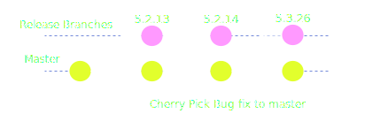

Intro
In the article I'll talk about various methods of using Git as a tool for teams to collaborate. I have personally used parts from every one of these workflows throughout my career.
First we should talk about versioning
What is a version of software?
A version of software is just a bundle of code at some point in history. In terms of Git, this can literally be commits. In a manner of speaking; every commit is a version of the code. However you may not want to publish every commit directly to production.
So we could simply expand on that definition and say that a version is just a commit we decide is something could release. Perhaps then a "version" is a build with a human-comprehendible number attached to it.
Versions can quite literally be serial numbers, the actual numbers don't have to mean anything. However wouldn't it be nice if there was a way to tell potential uses of your library or software what type of changes are going into a new version?
Enter Semantic Versioning (also known as semver)
It defines a scheme for what version numbers should mean and heres what it looks like:
major.minor.micro
Example: Postgres v9.4.5
- A change to Major means you are introducing one or more backwards incompatible changes to your code and consumers of your software should be aware of this fact. It would be in your best interest to publish release notes and migration path for this.
- Bumping Minor means that we are introducing a new set of features and bug fixes, but make the guarantee that our code will work with older versions in our same major version.
- Micro is a lot more flexible; and could just mean new code is added but not really anything releaseable.
Of course there are many version scheme's out there. As an author of code, you should publish this information somewhere so users of your software aren't confused. putting it in the README is totally acceptable.
Popular Git Workflows
Trunk focused
This comes mostly from the SVN and CVS worlds. Essentially it's just that everyone always works off
of trunk / master. It is by far the simplest to understand since developers just constantly pull
and push directly to master.
Pros
- Strait forward and easy to understand
- Doesn't require any special setup before hand
- Ideal for very small teams or individuals working on small projects
Cons
- Merge conflicts would become a train-wreck
- Force pushing would have to be disabled otherwise any developer could rewrite the tree and history would be always in-flux
- No code-review process
- This could be fine if you are implementing something like paired programming since you would always have at least 2 sets of eyes on the code.
Feature branching
This is by far the most popular branching strategy among agile development teams.

- Bob wants to work on Feature 1
- Do a
git pullfrommasterto get up to the latest stable code - Create a new 'feature' branch
- Change things at will and save that work by making commits to that branch
- It is Bob's responsibility to resolve any merge conflicts that arise over the course of time
- When Feature 1 is ready to merge...
- Bob will create a pull request
- Bob will run automated tests against this code with a CI server like Travis
- If tests pass; Bob asks his fellow developers for a code review
- Once a code maintainer or project lead approves this change, Bob can then merge the code back
to
master
Pros
- New features or changes can be thoroughly reviewed before making it to
master - Enables automated testing
Cons
- Long lived branches can become a mess of merge conflicts
- Without rebasing, Bob will inter-mix several commits into
mastertree. Thankfully Github has added a squash feature to make this easy
Release branching
Typically I've seen this done along side feature branching model. Every time the maintainer feels comfortable calling a bunch of commits a 'version', it gets a version branch. This branch will be a candidate for release. As the code goes through it's testing (unit, functional, regression, manual); If major bugs are discovered, then that branch will need to get fixes pushed to it. Ideally no new features would be pushed to a release branch once it has been created.

Pros
- Doesn't make an opinion about how commits make it to master, but pairs nicely with feature branching
- Makes a clean and clear track for what a 'version' is in the eyes of Git.
- Git does have the ability to apply the same diff to multiple bases. See: git cherry pick
Cons
- Any fix needs to be applied to both the release branch, and master; AND if it's a major bug, one may have to apply that patch to many previous release branches as well.
Build branching
This is something that I came up with while working at NarrativeScience and is a variation of Gitflow.
The idea is that we introduce another a new branch called the build branch. It's responsiblity is to manage built versions of the software.
Anytime you want to bump the micro version of the software; you must run a
build. This build includes running unit, functional,
and regression tests as well as necessary compilation steps. The output of this build is ideally
something you can freely distribute (RPM, Zip archive, Tarball, Jar file, .exe file)